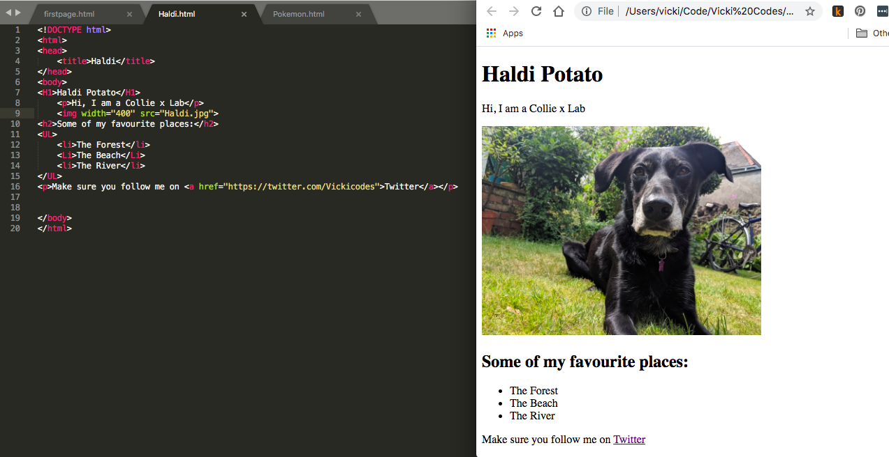
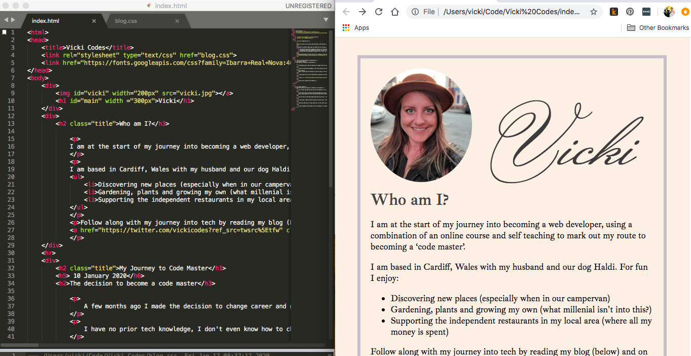

I am at the start of my journey into becoming a web developer, using a combination of an online course and self teaching to mark out my route to becoming a ‘code master’.
I am based in Cardiff, Wales with my husband and our dog Haldi. For fun I enjoy:
Follow along with my journey into tech by reading my blog (below) and on Twitter Follow @vickicodes
A few months ago I made the decision to change career and go into coding. I am very creative and have always taken a ‘trial, error and amend’ approach to life and so after being made redundant from a job that I loved in the banking industry, and not really knowing what to do next, I decided to give coding a try.
I have no prior tech knowledge, I don't even know how to change the line spacing on a word document! I have never needed to know as I am surrounded by “techies” who can do it for me (and in my opinion are a lot smarter than I am). I started looking into whether it was possible for someone like me (a woman, in her mid thirties, with no university degree) to even consider the possibility of a career in web development. It turns out I am not the only one who has made the change and there are heaps of resources and support out there to help people like me along the way.
When I finally made the decision to take the leap, I felt as though I was standing at the bottom of a mountain with no clue of how I would get to the top, or the challenges that I would face along the way; but I know I have determination and a great support network around me and so that is what I am going to use to get me there.
I spent quite a bit of time researching my options and looking for a course that would suit me. After listening to a podcast on CodeNewbies, I eventually settled on ‘The Web Developer Bootcamp by Colt Steele’ on Udemy; his style of teaching (short videos, lots of exercises) is conducive to the way I learn and so decided to sign up to that.
I took to Twitter and announced the start of my journey and I have been inspired with the response and support received! So much encouragement from other developers at different stages in their career, it really helped to quiet the ‘negative committee’ that sits inside my head, and for that I am really grateful.
Now to start climbing that mountain....
So I started the week with my new (to me) Macbook Air and a comfortable workplace, with lots of natural light and my dog sleeping at my feet. I was eager to get started!
By the end of day one, when I had learned HTML basic tags, comments and lists, I felt so good that I shared a screenshot of what I had made with all of my friends Such a basic page, but it felt really good having made something myself. I finished the first day absolutely buzzing and so eager to start again the next day!
Over the rest of the week things definitely got harder, I can't tell you how many times I left the ; off a CSS selector and spelling colour ‘color’ was difficult to get my head around. Surprisingly I found that one of my biggest challenges was having moved from Windows to a Mac, my brain just didn’t want to accept [cmd+C] to copy text! It turns out my most searched for subject this week is ‘keyboard shortcuts on a mac’.
At one point I really couldn't figure out how to make a ‘descendant’ selector work with a ‘nth-of-type’ selector, my husband (who has been a web developer for over 10 years) is under strict rules not to give me any answers but he was giving me guidance at this point, when I finally figured it out we both let out a little cheer and he said “see, you can do this!” I am really grateful for that encouragement. I am sure that I will come across many of those occasions where I’m feeling like “I’m just not capable” during this learning period, and probably well into my career, but drawing on those around me to be my “cheerleaders” is really going to help!
There have been lots of other highs too, it felt really good figuring things out and solving problems on my own, I made lots of mistakes and then learnt from them which gave me a real buzz!
I have finished the week with my first iteration of my webpageI am really proud of how it looks, if you had told me that by the end of my first week I would be creating something that looked like this I would not have believed you, but here it is! Bring on week 2!!